0. 課程資訊與教材
| 課程名稱 | EP16「用 Claude Skills 來學統計分析吧！（敘述統計、統計圖表及 t 檢定）」 |
|---|---|
| 頻道 | 生成式 AI 應用電台・晨學講堂 |
| 課程長度 | 約 1 小時 |
| 教材 | 官方課程簡報 46 頁＋「問卷資料統計分析器」（questionnaire-stats-analyzer）Claude Skill 原始檔（含 SKILL.md、README、Python 分析腳本）＋「團購小幫手」Skill 範例（含 SKILL.md／EXAMPLES／QUICK_START）＋探索式資料分析（EDA）補充教材（SPSS 操作簡報、APA 格式指南、模擬資料） |
| 一句話先懂 | Skills 就像是為 AI 準備的「專業證照」：讓通用的 Claude 模型瞬間轉化為特定領域的專家。 |
💡 本頁逐節整理簡報 46 頁內容，並對照課程附帶的真實 Claude Skill 原始檔（questionnaire-stats-analyzer、團購小幫手）核實技術細節；簡報原圖直接嵌入本頁重點段落。內容為真實課程內容，未經改寫杜撰。
1. 三段式議程（1 小時）
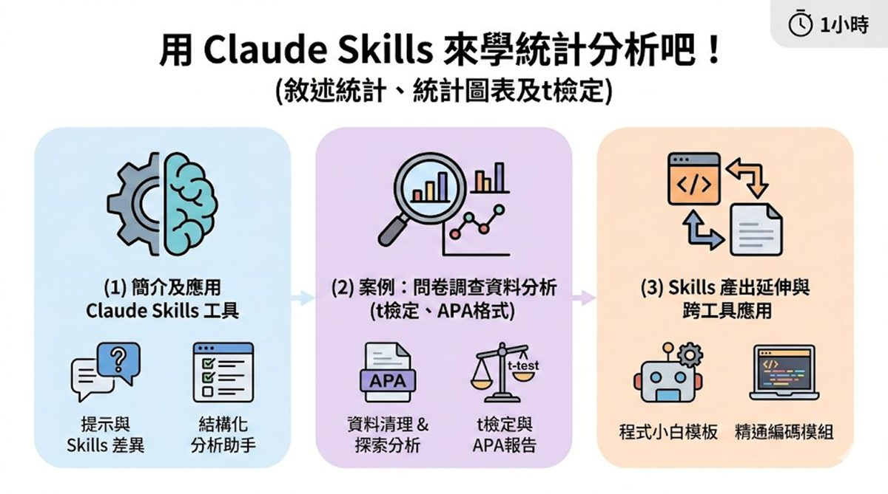
2. Claude Skills 是什麼？為什麼需要？
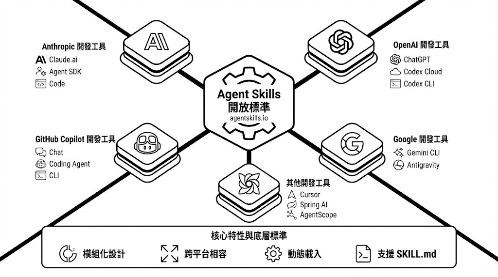
- 可重複使用的客製化指令。
- Claude 可在任何對話中遵循。
- 將一次性 Prompt 轉化為可工程化的數位資產。
- 不僅告訴 AI「做什麼」，更定義「如何判斷」和「如何執行」。
類比說明：Skills 就像是為 AI 準備的「專業證照」
讓通用的 Claude 模型瞬間轉化為特定領域的專家。
為什麼需要 Claude Skills？
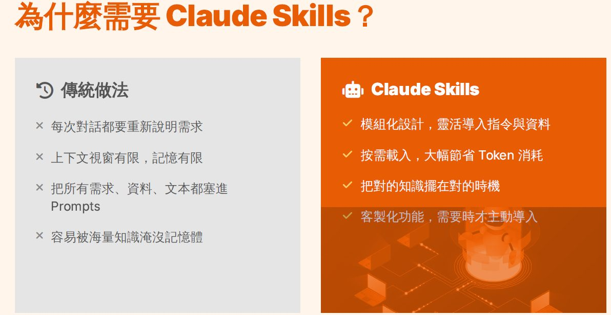
3. Skills 的三大組成元素與三大特性
三大組成元素
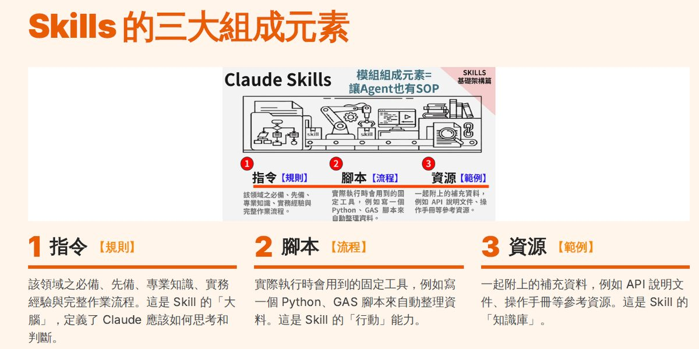
三大特性
| 特性 | 說明 |
|---|---|
| 01 可描述性（Describability） | 能夠清楚說明技能的經驗法則，讓 Claude 理解何時該使用這個技能，而非僅僅是執行指令。 |
| 02 可重現性（Reproducibility） | 在不同場景下都能維持穩定表現，確保輸出品質的一致性，將 AI 行為標準化。 |
| 03 可移轉性（Transferability） | 能夠透過分享讓他人也能使用，支援團隊協作與知識傳承，將個人經驗轉化為組織資產。 |
4. 開始使用 Claude Skills：前置準備與介面導覽
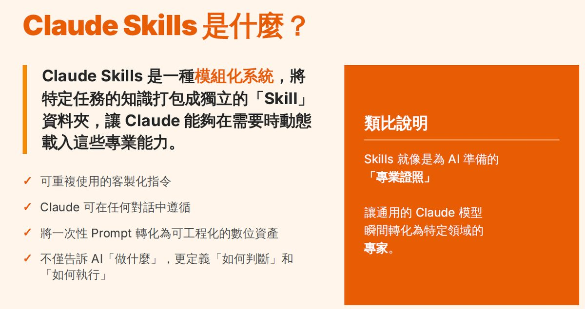
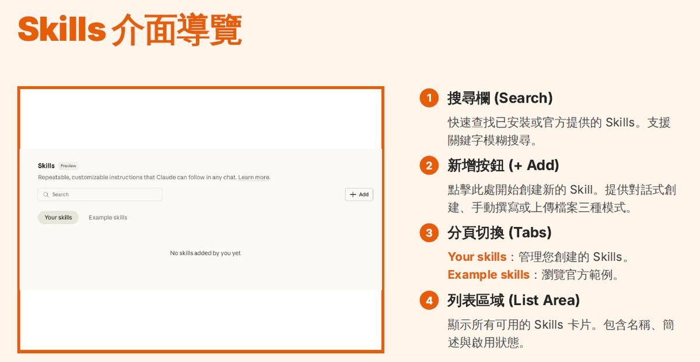
5. 案例：問卷資料統計分析器（questionnaire-stats-analyzer）
本集使用的示範案例：壓力管理 APP 介入研究——n=50，分成介入組與對照組各約 25 人，各自前測→後測，最後輸出符合 APA 7 格式的統計報告。
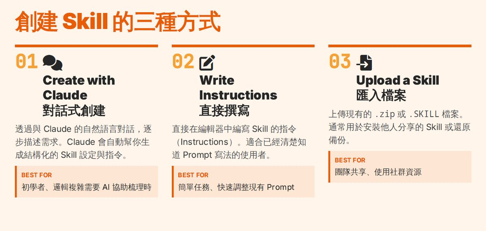
五階段完整工作流
依 Skill 原始 README 說明，這個真實部署的 Claude Skill 採五階段工作流，每階段皆含自我檢查：
- 資料清理（9 項檢查）：結構檢查、缺失值識別、數值格式清理、類別變數標準化、範圍檢查、離群值識別、衍生變數建立。
- 探索性資料分析 EDA（10 項分析）：單變數分布檢查、常態性判斷（Q-Q plot + Shapiro-Wilk）、群組分布比較、相關性分析、生成 EDA 總結報告。
- 資料編碼（10 項檢查）：變數型態辨識、類別編碼、連續格式化、編碼驗證。
- 統計分析（10 項判斷）：自動判定檢定類型、執行 t 檢定（成對／獨立／單一樣本）、計算效果量（Cohen's d）、三層檢驗確保正確性。
- APA 報告生成（10 項檢查）：標題頁、摘要、研究方法、研究結果（表格+文字）、討論與建議，完全符合 APA 7th 格式。
三層檢驗機制（Triple Verification）
| 檢驗層級 | 說明 |
|---|---|
| 層級 1：即時檢查 | 每完成一個步驟立即驗證，自動檢測數值合理性，確認圖形正確生成。 |
| 層級 2：階段檢查 | 每完成一個階段全面檢視，交叉驗證不同分析結果，確認可銜接下一階段。 |
| 層級 3：最終檢查 | 完成所有分析後從頭檢查，確認數值前後一致，驗證報告完整性。 |
⚠️ 缺失值處理策略：缺失率 < 5% 自動報告並建議，5-20% 必須詢問使用者決策，> 20% 警告風險並建議刪除變數。處理選項包含刪除該配對個案、保留並標示缺失、平均數／中位數／分組平均插補。
資料清理過程示意
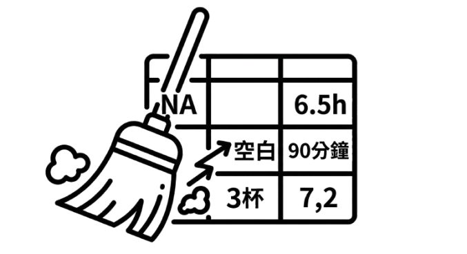
常見問題（FAQ，摘自 Skill 原始說明）
- 樣本數太小（n<30）怎麼辦？技能會自動標註樣本數限制，並在報告中說明；建議使用非參數方法。
- 資料嚴重不符常態怎麼辦？技能會嘗試資料轉換（log、sqrt），若仍不符合會建議非參數方法。
- 需要多個 t 檢定會有多重比較問題嗎？會！技能會自動提醒，並建議 Bonferroni 校正或改用 ANOVA。
💡 技能架構：questionnaire-stats-analyzer/ 底下為 SKILL.md（5000+ 字完整指引）＋ scripts/（data_cleaner.py、eda_analyzer.py、ttest_analyzer.py、apa_report_generator.py 四個 Python 分析模組）。需安裝套件：pandas、numpy、scipy、matplotlib、seaborn、python-docx、openpyxl。
6. 手把手教學：使用 skill-creator 創建 Skill
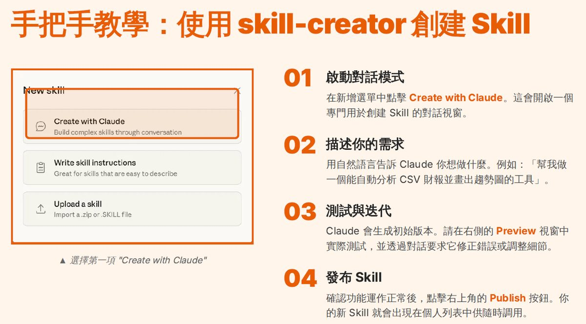
創建 Skill 的三種方式
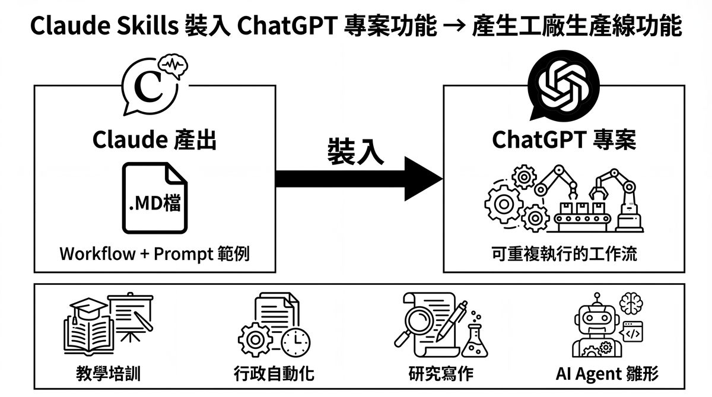
7. Skills 產出延伸與跨工具應用
把 Claude Skills 產出裝進 ChatGPT 專案功能
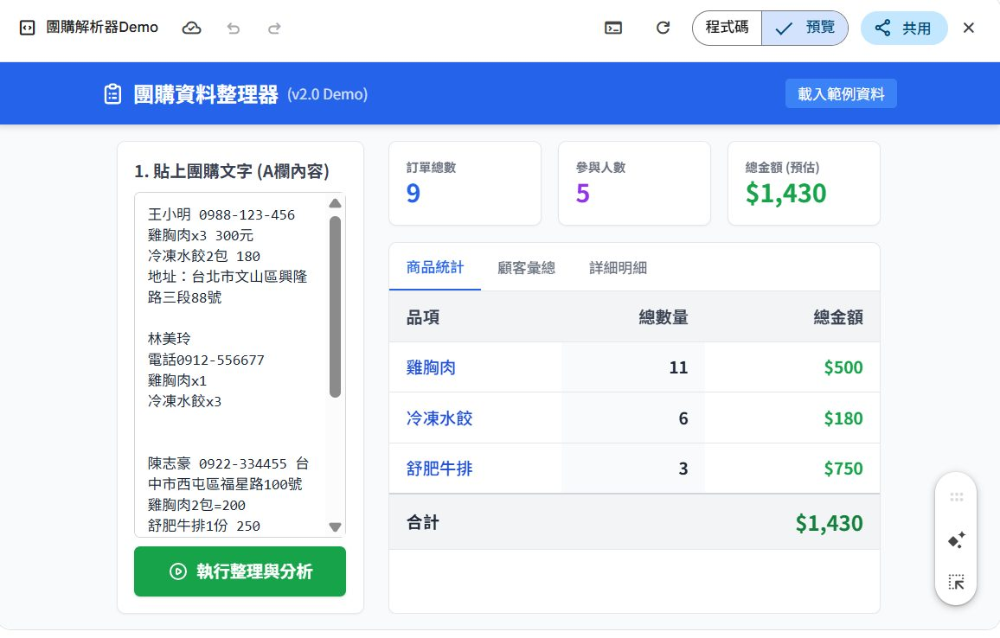
實例：「團購小幫手」Skill 從原始文字到自動報表
課程附帶另一個真實可用的 Skill 範例——把雜亂的團購訂單文字（姓名、電話、地址、品項夾雜在一起）自動整理成結構化報表。
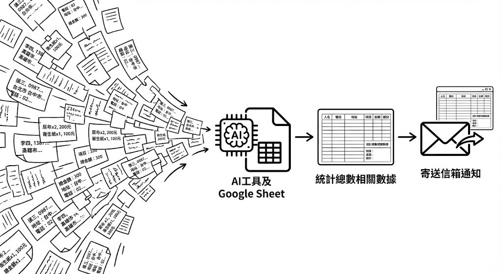
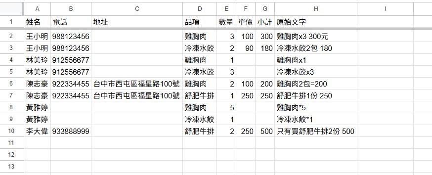
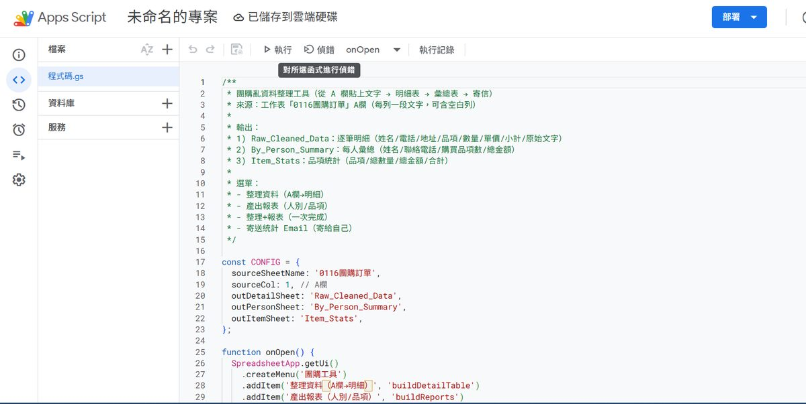
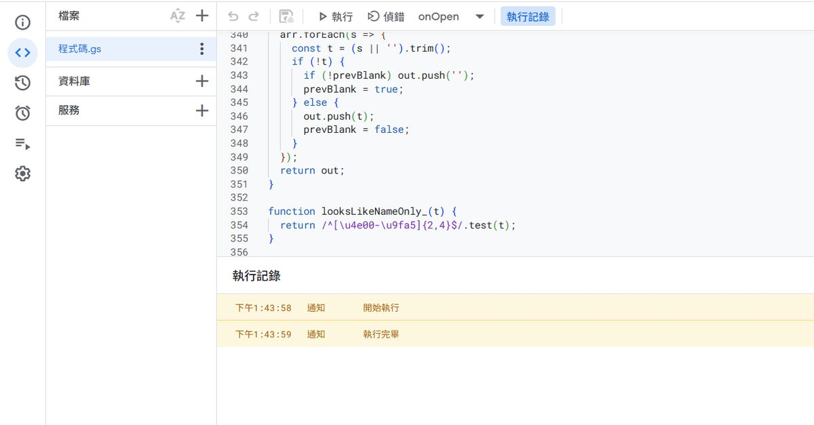
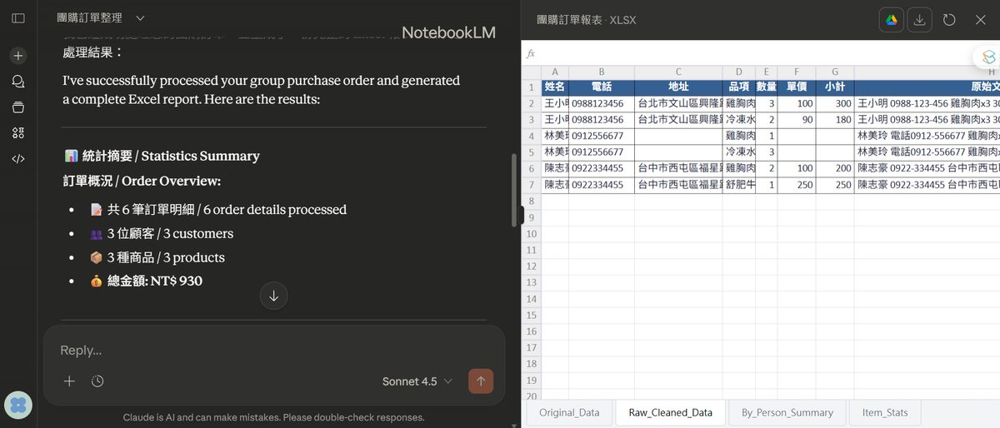
✅ 這個案例示範了同一份「亂資料」，可以分別用 Claude Skill＋Google Apps Script、或 NotebookLM，走出不同但同樣可靠的自動化路徑——這正是 Skills「可移轉性」的具體展現。
8. 資料來源與製作說明
- 原始教材：EP16「用 Claude Skills 來學統計分析吧！」官方課程簡報 46 頁；「問卷資料統計分析器」（questionnaire-stats-analyzer）Claude Skill 原始檔（SKILL.md、README、四個 Python 分析腳本）；「團購小幫手」Skill 範例（SKILL.md／README／EXAMPLES／QUICK_START）；EDA 補充教材（SPSS 操作簡報兩份、APA 7 格式指南 PDF、模擬資料 xlsx）。
- 製作方式：下載原始簡報 pptx，取出每頁內建設計背景圖（46 頁中 29 頁為圖文設計頁，已保留原圖），逐頁親眼判讀並對照 Skill 原始檔的 README 文字內容，整理成本頁章節。內容為真實課程內容與真實 Skill 技術文件，未經改寫杜撰。
- 誠實聲明：本集資料夾錄影檔案較大，暫未逐句轉寫，逐字稿時間碼暫缺，如日後開放取得可再補入；簡報中純過場／QR Code 頁未收錄為獨立截圖。
- 介面參考：頁面採全站現行「乾淨白底編輯風」版型（沿用 EP38 課堂筆記頁架構）。